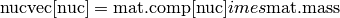

Material Class – pyne.material¶
This moudule contains the Material class which is used to represent nuclear materials throughout PyNE.
All functionality may be found in the material package:
from pyne.material import Material
- class pyne.material.Material¶
Material composed of nuclides.
Parameters : comp : dict or str
This is the input nuclide component dictionary. This dictionary need not be normalized; Material initialization will automatically renormalize the stream. Thus the comp simply is a dictionary of relative weights. The keys of comp must be integers representing nuclides in zzaaam-form. The values are floats for each nuclide’s weight fraction.
If a string is provided instead of a dictionary, then Material will read in the comp vector from a file at the string’s location. This either plaintext or hdf5 files.
If no comp is provided, an empty Material object is constructed.
mass : float, optional
This is the mass of the new stream. If the mass provided is negative (default -1.0) then the mass of the new stream is calculated from the sum of compdict’s components before normalization. If the mass here is positive or zero, then this mass overrides the calculated one.
name : str, optional
A string label for the material. Helpful for large numbers of streams. Default ‘’.
Methods
- atomic_weight¶
This method returns the atomic weight of the comp of this material. Note that this is only a rough estimate since this function is not yet coupled with measured atomic weights.
Returns : atomic_weight : float
Atomic weight in [amu].
- load_from_hdf5¶
A Material object may be initialized from an HDF5 file. The HDF5 representation of a Material is a group that holds several extendable array datasets. One array is entitled “Mass” while the other datasets are nuclide names in LLAAAM form (“U235”, “NP237”, etc). For example:
File.h5 (file) |-- Material (group) |-- Mass (array) |-- H1 (array) |-- O16 (array) |-- U235 (array) |-- PU239 (array) |-- ...The arrays are all of length N, where each row typically represents a different fuel cycle pass. The sum of all of the nuclide arrays should sum to one, like Material.comp.
Parameters : filename : str
Path to HDF5 file that contains the data to read in.
groupname : str
Path to HDF5 group that represents the data. In the above example, groupname = “/Material”.
row : int, optional
The index of the arrays from which to read the data. This ranges from 0 to N-1. Defaults to the last element of the array. Negative indexing is allowed (row[-N] = row[0]).
- load_from_text¶
A Material object may be initialized from a simple text file. The text representation of Materials are nuclide identifiers in the first column and mass or weight values in the second column. For example, for natural uranium:
922340 0.000055 U235 0.00720 92238 0.992745
Data in this file must be whitespace separated. Any valid nuclide naming scheme may be used for any nuctope.
Parameters : filename : str
Path to HDF5 file that contains the data to read in.
- mult_by_mass¶
This function multiplies comp by mass and returns the resultant nuctopic vector.
Returns : nucvec : dict
For a Material mat,

- norm_comp¶
Normalizes the composition, preserving the mass of the nuclide vector as mass.
- normalize¶
This convenience function normalizes the mass stream by setting its mass = 1.0.
- sub_act¶
Convenience method that gets the Actinide portion of a mass stream.
Parameters : name : str, optional
The name of the submaterial.
Returns : submaterial : Material
A new mass stream object that only has Actinide members.
- sub_fp¶
Convenience method that gets the Fission Product portion of a mass stream.
Parameters : name : str, optional
The name of the submaterial.
Returns : submaterial : Material
A new mass stream object that only has Fission Product members.
- sub_lan¶
Convenience method that gets the Lanthanide portion of a mass stream.
Parameters : name : str, optional
The name of the submaterial.
Returns : submaterial : Material
A new mass stream object that only has Lanthanide members.
- sub_ma¶
Convenience method that gets the Minor Actinide portion of a mass stream.
Parameters : name : str, optional
The name of the submaterial.
Returns : submaterial : Material
A new mass stream object that only has Minor Actinide members.
- sub_mat¶
Grabs a subset of the material and returns a new material comprised of only the specified nuclides. The elements or nuclides included in the new material are determined by nuc_sequence.
The input here is seen as a suggestion and so no error is raised if a nuclide is asked for via nuc_sequence that is not present in the original material.
Parameters : nuc_sequence : sequence
Elements and nuctopes to be taken from current stream. Members of this list must be integers. For example, [92, 942390] would take all uranium atoms and Pu-239.
name : str, optional
The name of the submaterial.
Returns : submaterial : Material
A new mass stream object that only has the members given in nuc_sequence. The mass of the submaterial is calculated based on the weight fraction composition and mass of the original mass stream.
- sub_pu¶
Convenience method that gets the Plutonium portion of a mass stream.
Parameters : name : str, optional
The name of the submaterial.
Returns : submaterial : Material
A new mass stream object that only has Plutonium members.
- sub_tru¶
Convenience method that gets the Transuranic portion of a mass stream.
Parameters : name : str, optional
The name of the submaterial.
Returns : submaterial : Material
A new mass stream object that only has Transuranic members.
- sub_u¶
Convenience method that gets the Uranium portion of a mass stream.
Parameters : name : str, optional
The name of the submaterial.
Returns : submaterial : Material
A new mass stream object that only has Uranium members.